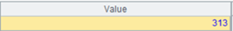
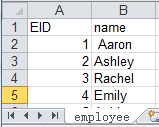
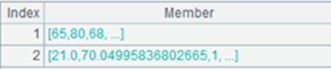
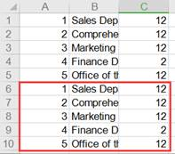
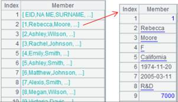
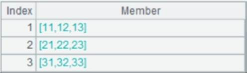
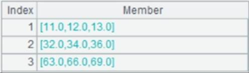
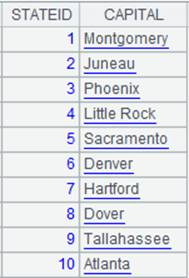

Description:
Write a table sequence or a cursor to an Excel file.
Syntax:
f.xlsexport(A,x:F,…;s;p)
Note:
The function writes table sequence/cursor A to Excel file f. Export all fields if no x is specified. The program will create the file f (cannot create path directory automatically) automatically.
If there isn’t a sheet s in f, the program will create one automatically. If sheet s already exists, it will receive the imported data in its format.
Options:
|
@t |
Write the first record as the header into a file; when a namesake file with content already exists, the last non-empty row will be treated as the header row |
|
@c |
Import a whole big file (but shouldn’t be too big) with stream style |
|
@a |
Write data after the last row according to the current format if the Excel file exists |
|
@w |
Use this option when parameter A is a sequence of sequences or a string delimited by /tab; it cannot work with both @t and @c, and requires the absence of parameters x:F |
|
@p |
If the table sequence/cursor to be exported is a sequence of sequence, use this option to transpose rows to columns before writing data to a target Excel file; the option must work with @w option |
Parameters:
|
f |
A file |
|
A |
Table sequence/cursor to be exported |
|
x |
Fields to be exported. If omitted, then export all fields which can be textualized in the record sequence A/cursor. The sign # is used to represent a field with a sequence number |
|
F |
Resulting field name; if omitted, then use the original field names |
|
s |
Sheet name or sheet number; when omitted, the exported data will be appended to the first sheet |
|
p |
The password for opening the exported Excel file |
Example:
|
|
A |
|
|
1 |
=demo.query("select EID,NAME,SURNAME from EMPLOYEE") |
|
|
2 |
=file("D:\\EMPLOYEE1.xls").xlsexport(A1;"employee";"123") |
 Write data to an xls file with an opening password; the password is 123 |
|
3 |
=file("D:\\EMPLOYEE2.xls").xlsexport@t(A1;"employee") |
 With @t option, write the 1st row into the file as the header |
|
4 |
=file("D:\\ EMPLOYEE4.xls").xlsexport@t(A1,EID,NAME:name;"employee") |
 Specify and export fields to the sheet of "employee" |
|
5 |
=file("D:\\EMPLOYEE4.xl").xlsexport@t(A1;"employee") |
Cannot determine the file extension, so export data as xls format to"EMPLOYEE4.xl" sheet |
|
6 |
=demo.cursor("select EID,NAME,SURNAME from EMPLOYEE") |
|
|
7 |
=file("D:\\EMPLOYEE5.xls").xlsexport(A6;"employee") |
A6 is a cursor |
|
8 |
=file("D:\\EMPLOYEE1.xls").xlsexport@t(A1) |
Append the file content after the first page when sheet name isn’t supplied, with the last existing non-empty row overwritten as the header row |
|
9 |
=file("D:\\big.txt").import@t() |
There are millions of data rows in big.txt |
|
10 |
=file("D:\\EMPLOYEE6.xlsx").xlsexport@st(A9;"employee") |
Throw exception when @s option is absent |
|
11 |
=file("D:\\EMPLOYEE7.xls").xlsexport(A1;#1,#2) |
Export the first two columns |
|
12 |
=demo.query("select * from DEPT where DEPTID <=5") |
|
|
13 |
=file("D:\\DEPT.xls").xlsexport@a(A1) |
 Write records after the last row to the existing Excel file according to its format |
|
14 |
=file("emp.xls").xlsimport@w() |
A4’s result is a sequence of sequences  |
|
15 |
=file("expfile1.xls").xlsexport@w(A14) |
Write A14’s data to expfile1.xls; the content is as follows:  |
|
16 |
=file("emp.xls").xlsimport@s() |
The content of A16 is as follows:  |
|
17 |
=file("expfile2.xls").xlsexport@w(A16) |
Write A16’s data to expfile2.xls; the content is as follows:  |
|
18 |
=file("exp_p.xls").xlsexport@wp(A14) |
Perform transposition on A14’s table before writing it to Excel
|

Related functions: